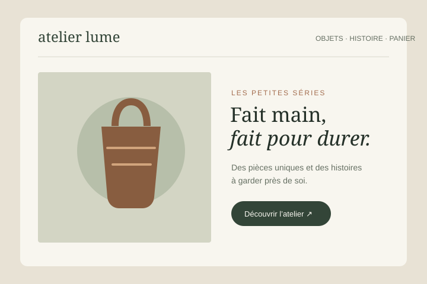
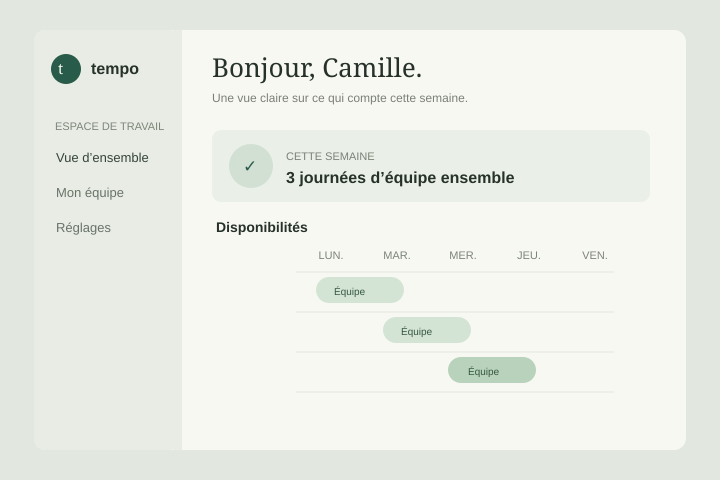
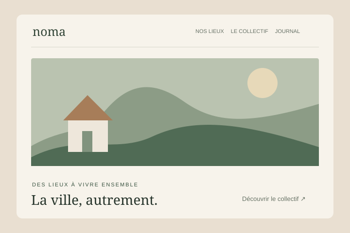
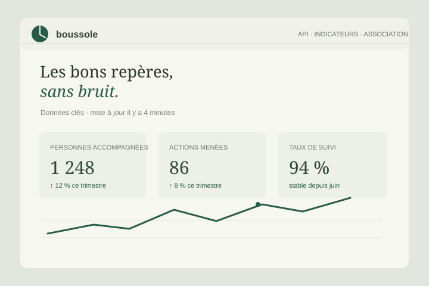

E-commerce · Full-stack
Atelier Lume
Une boutique en ligne pour une céramiste indépendante, conçue pour laisser le savoir-faire au premier plan.
Indépendant · disponible pour vos projets
Développeur full-stack, je transforme des idées ambitieuses en expériences numériques simples, rapides et utiles.
Sélection — 2022 à aujourd’hui
Des expériences à taille humaine, de la première maquette à la dernière ligne de code.

E-commerce · Full-stack
Une boutique en ligne pour une céramiste indépendante, conçue pour laisser le savoir-faire au premier plan.

Outil interne · Full-stack
Un outil de planification d’équipe qui transforme les disponibilités en semaines plus sereines.

Site éditorial · Front-end
Un site vivant pour un collectif de lieux indépendants, pensé pour les curieux et les voisins.

API & données · Back-end
Une API claire et documentée qui rassemble des indicateurs pour aider une association à décider.
D’autres projets sont disponibles sur GitHub (nouvel onglet)↗
Une boîte à outils, pas une fin en soi
La bonne technologie est celle qui rend le produit meilleur. Je privilégie des outils éprouvés, une architecture lisible et une équipe qui sait pourquoi elle les utilise.
Mon besoin est différentDes interfaces rapides, inclusives et accessibles à toutes et tous.
Des API bien structurées, faciles à faire évoluer et documentées.
Du cadrage au déploiement, avec méthode, curiosité et bon sens.
La qualité, c’est aussi rendre les choses simples à reprendre.
Une conviction, chaque projetLa prochaine bonne idée ?
Un projet en tête, une équipe à renforcer ou simplement envie d’échanger ? Ma boîte mail est ouverte.
bonjour@example.invalidAdresse de démonstration : aucun message ne sera reçu.